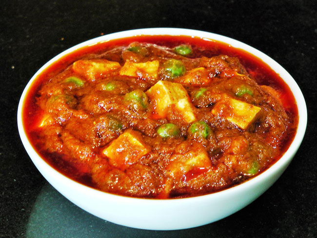
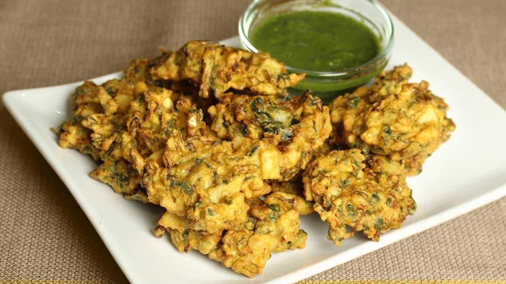
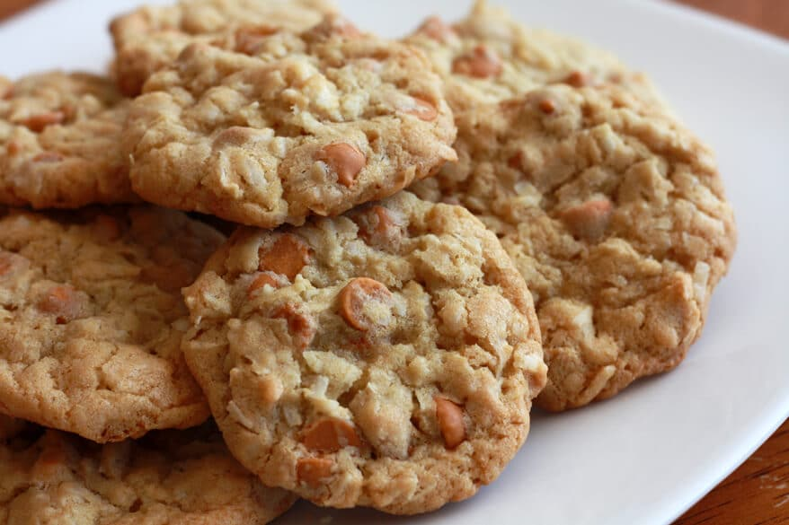

Matar Paneer
About Matar Paneer Recipe: An everyday dish of cottage cheese and peas mingled in a rich, tomato gravy. Matar Paneer is a dish from India, made more often in North Indian homes in dinner menu or even for lunch. You can have it with chapati or naan and even mix with rice.
Ingredients of Matar Paneer
:
- 2 Cups Paneer (cubed, deep fried to a light brown)
- 2 Cups Green peas (shelled)
- 3-4 Green chillies (slit a little)
- For the gravy:
- 2 Cups Onion, chopped
- 1 tsp Garlic cloves (ground with onions), peeled
- 1 tsp Ginger, chopped
- 1/2 Cup Tomato, grated
- 1/4 Cup Oil
- 2 tsp Cumin seeds
- 2 Bay leaves (tej patta)
- 1/2 tsp Turmeric (haldi)
- 1 Tbsp Salt
- 1/2 tsp Garam masala
- 1/2 tsp Red pepper, powdered
- 1 Tbsp Coriander (dhania) seeds, powdered
- 1 Tbsp Coriander leaves (for garnish), chopped
How to Make Matar Paneer
- 1.Blend the onions, garlic and ginger to a paste.
- 2.Heat oil and add the cumin seeds and the bay leaves.
- 3.Add onion paste and saute till brown and fat separates.
- 4.Add tomatoes, turmeric, salt, garam masala, red pepper and the coriander powder, and stir-fry till fat separates.
- 5.Add the peas, paneer and the green chillies and saute over high heat till glossy.
- 6.Add two cups water, bring to a boil and simmer for 5-10 minutes.
- 7.Serve hot, garnished with the coriander leaves. Omit the chillies if you so desire.

Vegetable Pakoda
About Vegetable Pakoda Recipe: The most loved monsoon snack across the country, pakodas are quick as well as easy to cook. This pakoda recipe has hot and crispy besan laden pakodas, filled with fresh veggies like carrot, potato, onion and capsicum. Tossed with chat masala, you cam serve pakodas with mint chutney.
Ingredients of Vegetable Pakoda
- 40 Gram Carrot
- 40 Gram Potato
- 40 Gram Onion
- 40 Gram Capsicum
- 120 Gram Besan
- 20 Gram Corn flour
- 40 Gram Mint chutney
- 1 piece Banana leaf
- 40 Ml Sun flower oil
- 1 Gram Chat masala
How to Make Vegetable Pakoda
- 1.Mix all the vegetables with the Besan batter.
- 2.Put into deep fried net all together and fry till golden brown.
- 3.Remove and cut into small pieces, toss with chat masala.
- 4.Serve with mint chutney.

Butter Scotch Cookies
About Butter Scotch Cookies Recipe: A delicious cookie recipe to accompany your hot cup of tea. These melt in your mouth butter scotch cookies are soft yet crispy, packed with the flavour of butter scotch chips and goodness of butter that you just can't resist having more of these treats. These are eggless, so bonus points for that! You can serve these along with tea to your guests. Kids too would love to indulge in this. Baked to perfection, these just take 20 minutes to cook. Easy and real quick!
Ingredients of Butter Scotch Cookies
- 100 Gram Maida
- 500 Gram Sugar
- 600 Gram Butter
- 30 Gram Skim milk powder
- 25 Gram Custard powder
- 100 Gram Milk
- 200 Gram Butter scotch chips (srushed)
How to Make Butter Scotch Cookies
- 1.Prepare a creaming method cookie dough with all the ingredients, reserving part of the butterscotch chips for garnish.
- 2.Sheet the dough, sprinkle the reserved butterscotch and cut into desired shapes.
- 3.Bake at 175°c for 18-20 minutes.